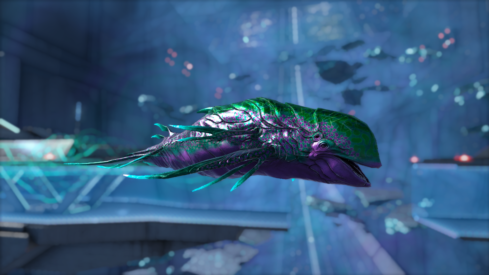
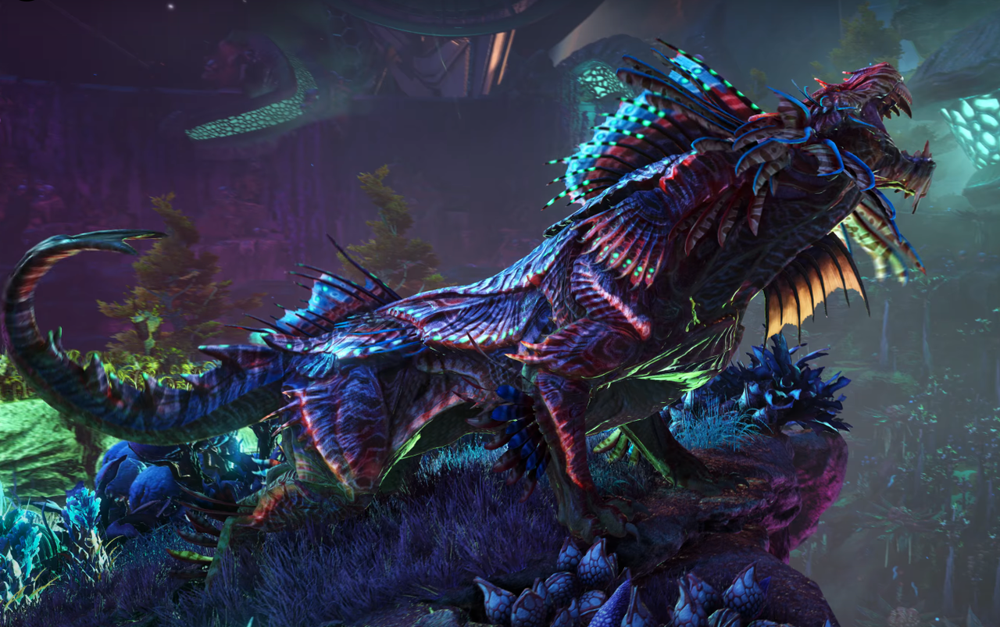
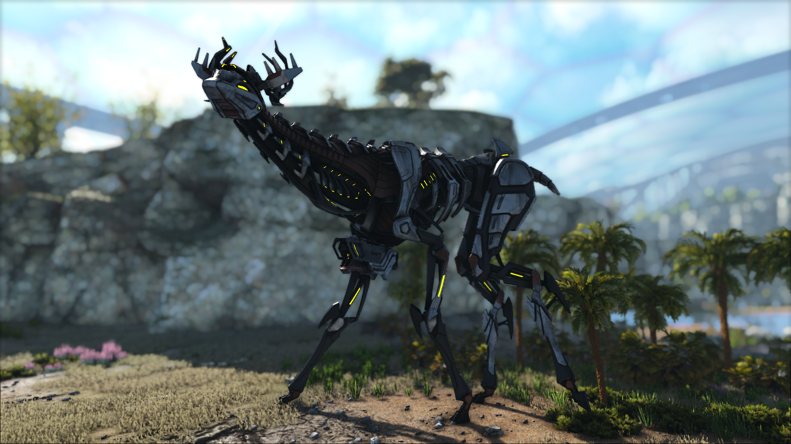
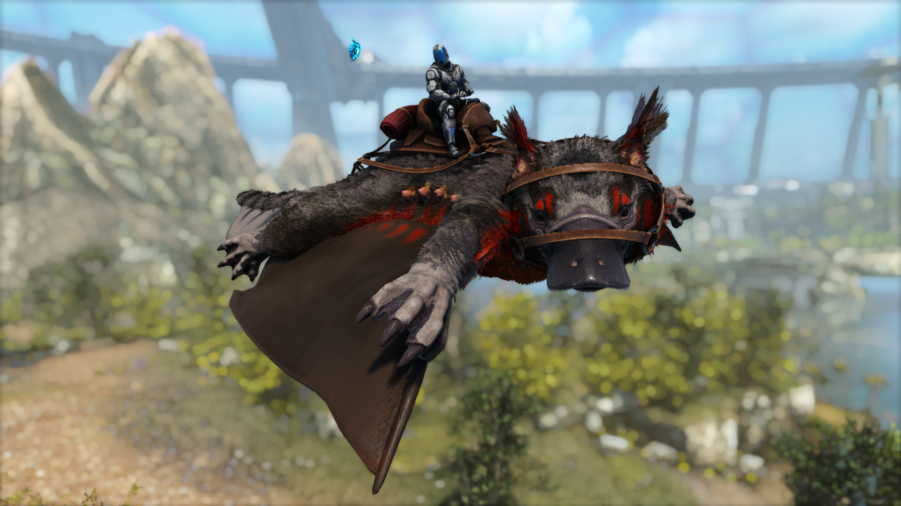

ARK: Genesis Part 2
Описание карты
Genesis Part 2 — это финальная глава истории ARK: Survival Evolved. В этом дополнении игроки перемещаются на огромный космический корабль, разделённый на два биома — Эдем и Пустоту. Карта предлагает разнообразные задания, новый набор существ и возможность использования улучшенных технологий.
Новые уникальные существа
- Астродельфис (Astrodelphis) — Космическое существо, напоминающее дельфина.

- Шадоумейн (Shadowmane) — Быстрое существо, которое может становиться невидимым.

- Тек-стридер (Tek Stryder) — Гигантская роботизированная машина.

- Р-Рекс (R-Rex) — Вариант Тираннозавра с улучшенными характеристиками.

- Мэйвинг (Maewing) — Полуутконос, полу-летун.
